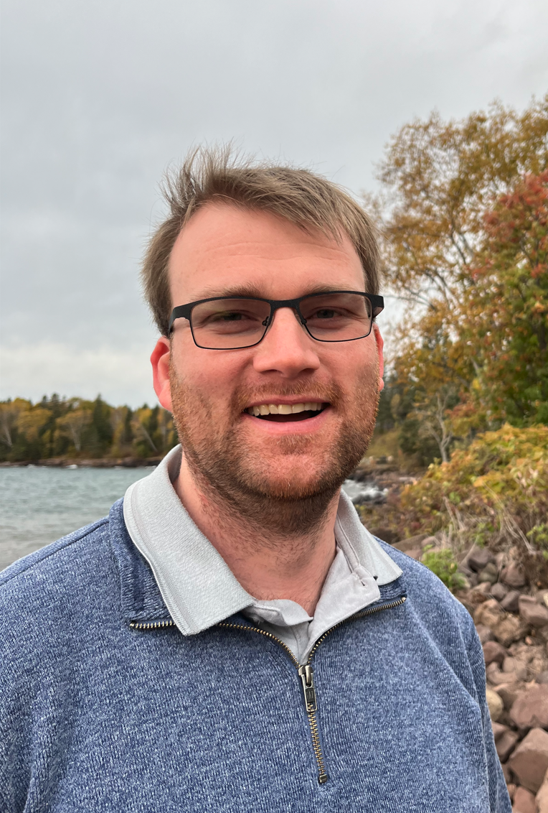

About Me

Dr. Thor E. Andreassen is a postdoctoral research fellow at the Mayo Clinic in Rochester, MN funded by a National Institute of Arthritis and Musculoskeletal and Skin Diseases (NIAMS) T32 grant under the mentorship of Dr. Kristin D. Zhao. Dr. Andreassen received his PhD and MS in Mechanical Engineering from the University of Denver under the mentorship of Dr. Kevin B. Shelburne and a BS in Mechanical Engineering from the Colorado School of Mines. Dr. Andreassen combines his expertise in biomechanical modeling and simulation, machine learning, and novel medical imaging technologies to improve our understanding of musculoskeletal system. His current research is focused on utilizing advanced modeling techniques together with 4DCT to improve the diagnosis and treatment of hand and wrist injuries. In addition to his research career, Dr. Andreassen spent nearly 8 years in industry as a Research and Development Engineering in Condition Monitoring of large-scale machinery.
Dr. Andreassen has collaborated with numerous researchers throughout his career, including Kristin D. Zhao, Kevin B. Shelburne, Andrew R. Thoreson, Peter J. Laz, Ahmet Erdemir, Thor F. Besier, Carl Imhauser, Jason Halloran, Landon D. Hamilton, Donald R. Hume, Sean E. Higinbotham, Gary Doan, Samuel R. Mattei, Sanjeev Kakar, Taylor P. Trentadue, David R. Holmes III, Shuai Leng, Vilai Parunyu, and Hsuan Yu (Samuel) Chen.